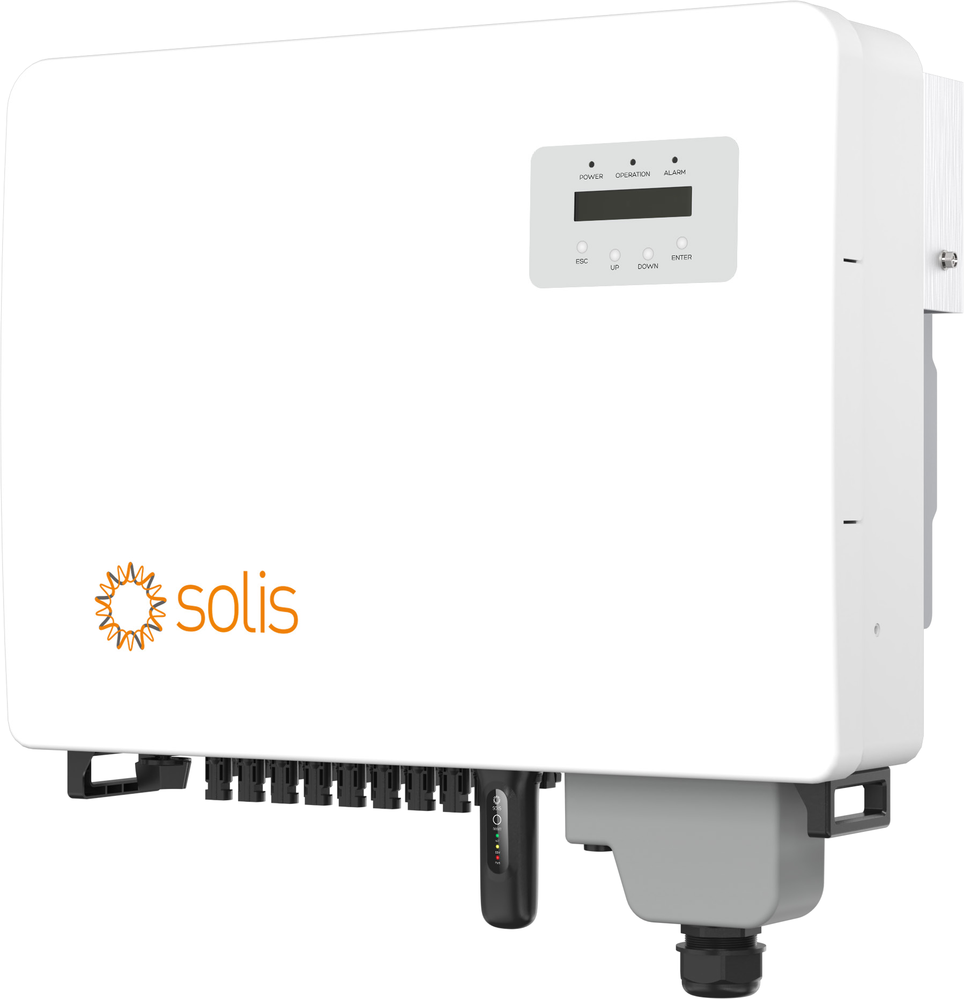

Solis 삼상 인버터
S6-GC36K-K Series
효율적
- 최대 효율 98.7% · 발전 개시 전압 180 V
- 4 MPPT / 8개 스트링
- 모델별 입력 전류·Fuse 구성
안전
- AFCI 아크 차단 기능
- IP66 방수·방진 / C5 부식 방지 등급
- IP68 이중 팬 냉각 · 속도 제어
- DC·AC Type II 서지 보호
스마트
- 스트링 모니터링 · I-V 커브 스캐닝
- EPM 역류 방지 기능
- 야간 SVG 기능 (선택 사항)
- 원격 업그레이드 및 설정 지원
경제적
- PLC · GPRS · Wi-Fi 통신 지원
- 알루미늄 AC 케이블 접속 지원
- 150% 이상의 DC 오버레이 지원
주요 사양
제품 선정과 설치 검토에 필요한 핵심 정보를 확인하세요.
모델명
S6-GC36K-K15 / K20 / K25 / K30
| DC 입력 | |
|---|---|
| 최대 입력 전압 | 1,000 V |
| 최적 정격 전압 (VDC, MPP) | 830 V |
| 발전 개시 전압 | 180 V |
| 입력 전압 범위 | 180 ~ 1,000 V |
| MPP 전압 범위 | 480 ~ 800 V |
| 최대 입력 전류 |
K15: 스트링 10 A / MPPT 20 A K20: 스트링 13.3 A / MPPT 26.6 A K25: 스트링 16.6 A / MPPT 33.2 A K30: 스트링 19.9 A / MPPT 39.8 A |
| 최대 단락 전류 | 4 × 50 A |
| MPPT / 스트링 수 | 4 / 8 |
| Fuse 사양 |
K15: 1,000 V / 15 A K20: 1,000 V / 20 A K25: 1,000 V / 25 A K30: 1,000 V / 30 A |
| AC 출력 | |
|---|---|
| 정격 출력 전력 | 36 kW |
| 최대 피상 출력 전력 | 39.6 kVA |
| 최대 출력 전력 | 39.6 kW |
| 정격 출력 전압 | 3/N/PE, 220 V / 380 V |
| 정격 주파수 | 60 Hz |
| 정격 출력 전류 | 54.7 A |
| 최대 출력 전류 | 60.2 A |
| 역률 | 정격 출력 시 0.99 이상 진상 0.8 ~ 지상 0.8 |
| 최대 고조파 왜율 | < 3% |
| 효율 | |
| 최대 효율 | 98.7% |
| 유로 효율 | 98.1% |
| 보호기능 | |
|---|---|
| 직류 역극 보호 | 지원 |
| 단락 보호 | 지원 |
| 출력 과전류 보호 | 지원 |
| 서지 보호 (SPD) | Ⅱ형 (DC, AC) |
| 그리드 모니터링 | 지원 |
| 온도 보호 | 지원 |
| I-V 커브 스캐닝 | 지원 |
| 스트링 모니터링 | 지원 |
| AFCI 아크 차단 기능 | 무상 탑재 |
| PID 예방 기능 | 무상 탑재 |
| 기본데이터 | |
|---|---|
| 크기 (가로×세로×깊이) | 647 × 629.5 × 258 mmAC 커버 포함 치수 |
| 무게 | 37 kg |
| 자체 소모 전력 (야간) | < 1 W |
| 동작 온도 범위 | -25 ~ +60℃ |
| 상대 습도 | 0 ~ 100% |
| 방수·방진 등급 | IP66 |
| 냉각 방식 | 자동 속도 제어 냉각 기능 |
| 최대 동작 해발 고도 | 4,000 m |
| 안전 / EMC 표준 |
KS C 8567/8565 IEC/EN 62109-1/-2 IEC/EN 61000-6-1/-2/-3/-4 |
| DC 케이블 | MC4 커넥터 |
| AC 케이블 | OT terminal |
| 디스플레이 | LCD |
| 통신 방식 | RS485 |
※ Solis 브로슈어 PDF 6페이지(인쇄면 9~10쪽)의 데이터시트 기준입니다.
입력 전류와 Fuse 사양은 K15·K20·K25·K30별로 구분했습니다.
전체 설치·운전 조건은 상세 PDF를 확인해 주세요.
상세 데이터시트
상세 PDF 보기 ↗
전체 전기적 사양 · 보호 기능 · 설치 조건